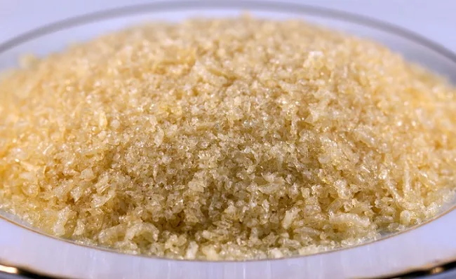
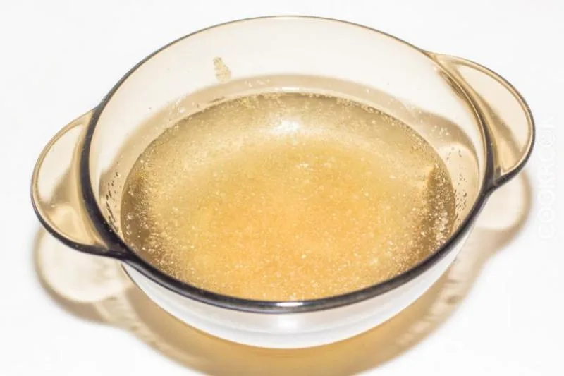
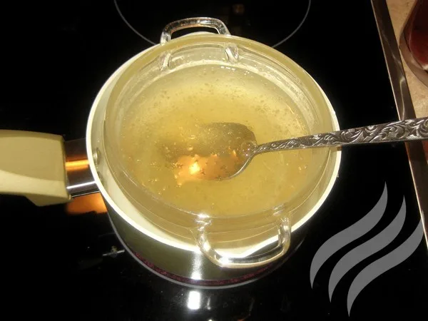
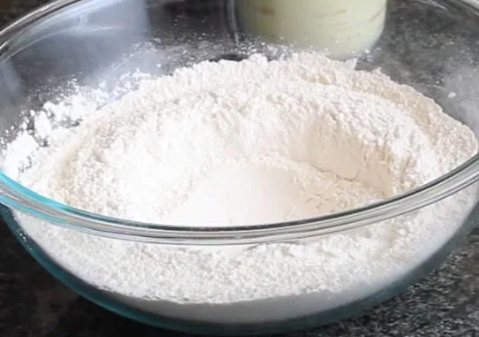
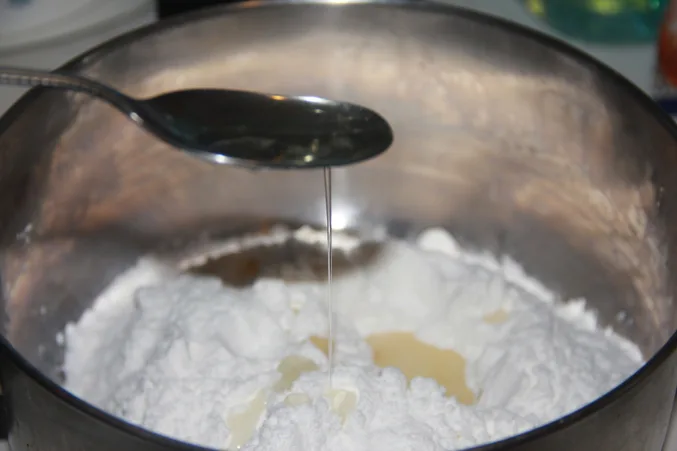
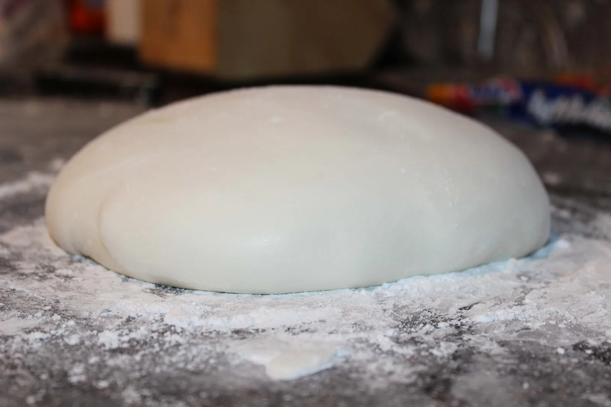
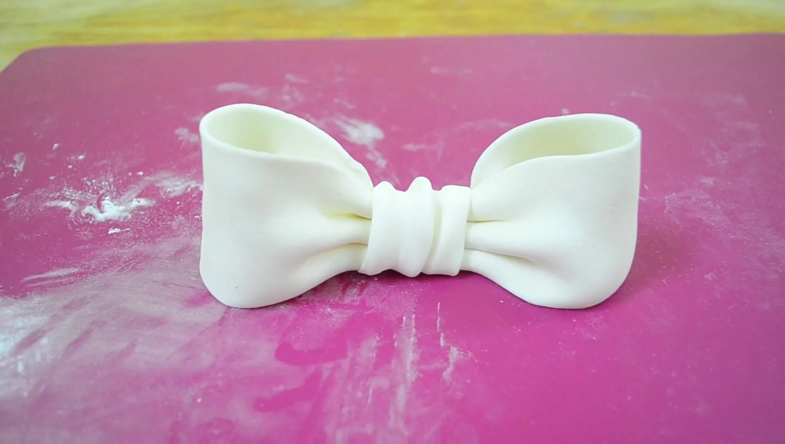

Рецепт мастики з желатину не вимагає дорогих компонентів і відмінно підійде для прикраси домашньої випічки і десертів: із неї можна зліпити улюблену композицію. Її незаперечна перевага – на виході ви отримаєте суміш білого кольору, що важливо для подальшого використання харчових барвників.
Якщо є желатин і цукрова пудра

Готові попрацювати над желатиново-цукровою мастикою? Тоді озбройтесь наступними інгредієнтами та інвентарем.
Будуть потрібні:
- 1 чайна ложка харчового желатину (gelatin) без гірки;
- 1 стакан дрібної цукрової пудри (перед приготуванням її слід ретельно просіяти через ситечко від великих крупинок, позбутися від грудочок);
- 8 чайних ложок холодної води;
- 5 крапель соку лимона (додає білизни кольору і підсушує суміш);
- за бажанням можна використовувати ароматизатори (підійде есенція мигдалю або ванілін), а також харчові барвники;
- глибокий посуд;
- столові прибори.
Це важливо!
Мастика з желатину неодмінно сподобається кондитерам, люблячим відточувати свою майстерність, адже її приготування вимагає деяких витрат часу і трошки терпіння.
Крок за кроком рухаємося до фінішу
Крок 1.

Перш за все слід приготувати “желейну кашку”: висипте 1 чайну ложку продукту в чашку і додайте туди ж 8 ложок холодної води або води кімнатної температури. Слідкуйте, щоб крупиці не злиплися на дні, ретельно помішуйте протягом 30 хвилин (в залежності від марки желатину може знадобитися година). У надмірно круту кашку можна додати ще чайну ложку води.
Крок 2.

Отриману суміш відправте в мікрохвильову піч або ж на водяну баню. Уважно стежте, щоб рідина не закипіла. Коли в чашці буде тільки жовтувата вода без вкраплень – пр.оцес можна вважати завершеним. На цьому етапі додаємо сік лимона і ароматизатор.
Крок 3.

З’єднайте гарячу желатинову воду і цукрову пудру в глибокому посуді: зробіть лунку в цукрі і поступово виливайте туди рідину. Почніть вимішувати суміш ложкою, як тісто на вареники. Слідкуйте за консистенцією і при необхідності додайте цукрову пудру.

Коли мастикова маса буде вимішана, перенесіть її на робочу поверхню і продовжуйте процес руками вже на столі.

Це важливо!
Желатинова мастика для обтягування торта вважається готовою, коли вона буде відлипати від рук. Але вона все ще має залишатися м’якою, так як в подальшому, під час «відпочинку» в холодильнику протягом 30 хвилин, вона загусне більше.
Ліпимо, але не обтягуємо

В умілих руках желатинова мастика стає податливою, як пластилін. Вона ідеально підійде для виготовлення чудових кондитерських фігурок, а ось для обтягування тортиків її використовувати не варто, так як вона може потріскатися. Пам’ятайте, що працювати з нею потрібно швидко – вона практично моментально сохне.